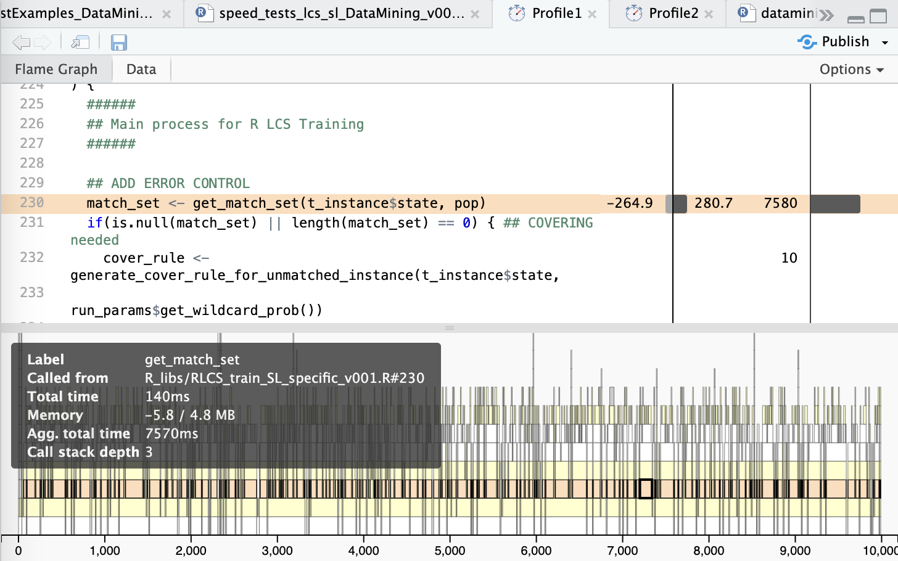

RCpp for the Win!
This entry was not “planned”, as I am still working on this last bit, and also I shouldn’t touch things as I have a presentation coming next week on this, but…
One key issue with the LCS algorithm, as repeatedly mentioned thus far, is training speed… It’s not great. And after running it many (many many) times, it does work, but I am well aware this will be a problem at some point. We also know R is an interpreted and (thus) slow language. I have done my best to take advantage of SIMD capacity of nowadays CPUs (through the lapply() family of functions).
And so, as also mentioned in the past, I have been profiling the code (using profvis) and I have known for quite a while that the bottleneck in the end is in the matching operation. I won’t explain what matching entails here, but it is maybe the most used operation of the algorithm, and one that is expensive.
Now I could (I guess) re-code it all in C++ (or, say, Rust? I was reading up on that… But that’s a story for some other time), but let’s face it… I don’t wanna. Also, it’d be a lousy R Package if it had no R code…
But, let’s face it, sometimes one has no choice but to move beyond R.
The results, please?!
Alright alright, I digress, I know.
Here.
BEFORE:

Now this is a real, but incomplete test.
And all I did was change the one piece of code like so:
## Inside "get_match_set()", a sub-routine gets indices...
## BEFORE
# match_set <- which(sapply(pop, \(item, ti_cond) {
# rule <- item$condition_list
# !(any(ti_cond[rule$'0'] != 0) || any(ti_cond[rule$'1'] != 1))
# }, ti_cond))
## AFTER
match_set <- get_match_set_cpp(pop, ti_cond)And (although it’s very basic and probably not great…) here the new version of the same functionality, but in C++ with some RCpp “sugar”:
#include <Rcpp.h>
using namespace Rcpp;
bool element_matches(List element, NumericVector ti_cond) {
List temp_conds = element("condition_list");
NumericVector temp_conds_0 = temp_conds("0");
int j;
for(j = 0; j < temp_conds_0.size(); j++) {
if(ti_cond[temp_conds_0[j]-1] != 0) { return(false); }
}
NumericVector temp_conds_1 = temp_conds("1");
for(j = 0; j < temp_conds_1.length(); j++) {
if(ti_cond[temp_conds_1[j]-1] != 1) { return(false); }
}
return(true);
}
// [[Rcpp::export]]
Rcpp::NumericVector get_match_set_cpp(List pop, NumericVector ti_cond) {
NumericVector matches_indices;
int i;
for(i = 0; i < pop.length(); i++) {
if(element_matches(pop[i], ti_cond)) {
matches_indices.push_back(i+1);
}
}
return(matches_indices);
}And AFTER said changes:
Notice the 4 seconds mark vs the 10 seconds (overall)? And that’s just one test… That is, in spite of using vectorized operations, I was far from “fast enough”, compared to a compiled version.
The issue I faced
One problem I had with this‚Ķ Is that I need to update my whole MacBook OS and XCode to get RCpp to run on it ü§ï
And I’m not home, I’m using Mobile data, and I’m literally 5 days away from having to demo this thing “live”, and I just don’t want to break anything right now!
So… I went back to Docker (which I hadn’t used for a while… And the OSX complained it was a “potential malware”, and I had to re-install that too…), and got myself a new RStudio container, and did all the tests from there…
So I’ll do more testing AFTER I have a new full-backup, and I’m at home to upgrade the whole environment…
But regardless (and that’s what’s cool with Docker!), this just worked :)
Conclusions
Sometimes, you have to go down one level (or two)… But it’s soooo worth it :)